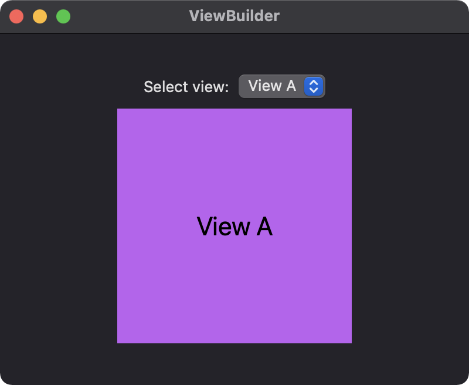

The @ViewBuilder attribute can be used to build views from closures. To demonstrate, three views are defined as shown below:
struct ViewA: View {
var body: some View {
Text("View A")
.font(.title)
.frame(width: 200, height: 200)
.foregroundColor(.black)
.background(Color.purple)
}
}
struct ViewB: View {
var body: some View {
Text("View B")
.font(.title)
.frame(width: 200, height: 200)
.foregroundColor(.black)
.background(Color.green)
}
}
struct ViewC: View {
var body: some View {
Text("View C")
.font(.title)
.frame(width: 200, height: 200)
.foregroundColor(.black)
.background(Color.orange)
}
}
In the main ContentView, a function is used to switch between the different views based on the selected picker item. Notice the use of @ViewBuilder allows the function to provide different child views. Without the @ViewBuilder attribute, the function would need to wrap each case's view with AnyView.
struct ContentView: View {
@State private var selectedView = 1
var body: some View {
VStack {
Picker("Select view:", selection: $selectedView) {
Text("View A").tag(1)
Text("View B").tag(2)
Text("View C").tag(3)
}
.fixedSize()
getView(tag: selectedView)
}
.padding()
.frame(width: 400, height: 300)
}
@ViewBuilder
func getView(tag: Int) -> some View {
switch tag {
case 1:
ViewA()
case 2:
ViewB()
case 3:
ViewC()
default:
ViewA()
}
}
}

Gavin Wiggins © 2025
Made on a Mac with Genja. Hosted on GitHub Pages.